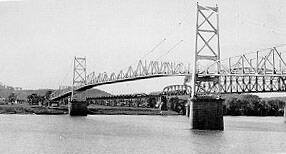

Point Pleasant
West Virginia, 1966 to 1967

Home of the Mothman legend, with many reports of a winged creature and strange lights. 1
Open in the interactive Watcher
Related
- John Keel Person
Sources
- Mothman Wikipedia
West Virginia, 1966 to 1967

Home of the Mothman legend, with many reports of a winged creature and strange lights. 1
Open in the interactive Watcher